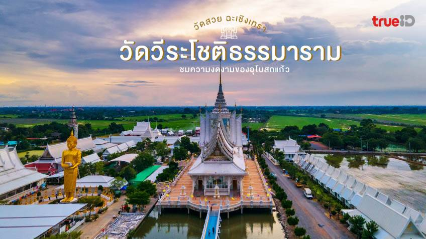

สถานที่ท่องเที่ยวในจังหวัดฉะเชิงเทรา

วัดโสธรวรารามวรวิหาร
วัดที่มีชื่อเสียงประจำจังหวัดฉะเชิงเทรา เป็นที่ประดิษฐานหลวงพ่อโสธร

ตลาดบ้านใหม่ร้อยปี
ตลาดที่เก่าแก่และมีเสน่ห์ในความเรียบง่าย สะท้อนวัฒนธรรมพื้นบ้านในเมืองแปดริ้ว

วัดสมานรัตนาราม
จุดเด่นของวัดสมานรัตนารามคือ องค์พระพิฆเนศปางนอนองค์ใหญ่ที่สุดในประเทศไทย

วัดวีระโชติธรรมาราม
วัดที่มีบรรยากาศสงบร่มเย็น เหมาะแก่การปฏิบัติธรรมและชมสถาปัตยกรรมที่งดงาม

วัดปากน้ำโจ้โล้
โบสถ์ทองคำที่งดงามและมีเอกลักษณ์เป็นหนึ่งเดียวในประเทศไทย โดดเด่นด้วยสีทองอร่ามรอบทั้งหลัง

เกาะนก
เกาะนกคือแหล่งท่องเที่ยวเชิงธรรมชาติที่ไม่เพียงแต่ให้ความเพลิดเพลินในการท่องเที่ยว

สวนปาล์ม ฟาร์มนก
สวนปาล์มฟาร์มนกคือที่ที่เปิดให้ได้เล่นกับนกแก้วมาคอว์และนกแก้วพันธุ์เล็กอื่นๆมากมาย

อ่างเก็บน้ำคลองสียัด
มีพื้นที่ให้ได้นั่งปิกนิก พลางชมบรรยากาศของอ่างเก็บน้ำที่กว้างขวางและร่มเย็น